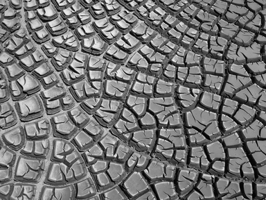
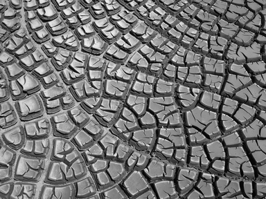
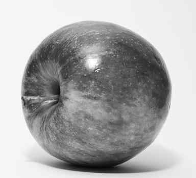
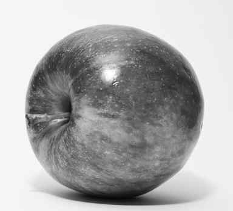

Julian Abich, Jeremy Flynn, David Poole, Steve Ward
Introduction
Researchers at the University of Central Florida (UCF) study many topics. To do this, we need the help of people who agree to participate in a research study. You are being invited to participate in a research study for our graduate-level course because the researchers are investigating how people perceive distortion in compressed images. You must be 18 years of age or older to be included in this research study and give consent at the bottom of this form. You can read this form and agree to participate now or later (if you choose).
What you should know about this research study
This research study will be explained to you.
This research study is voluntary.
You can agree to participate now and later change your mind.
Whatever you decide, it will not be held against you.
Feel free to ask all the questions you want before you decide.
Purpose of the research study
We are investigating the threshold at which the typical human visual system can perceive image distortions.
What you will be asked to do in the study
This study involves completing a questionnaire about your demographic information. Next, you will be asked to compare pairs of images and decide if the images are identical or different.
Location
This is a web-based study, so you can complete the study wherever you have a computer and internet access.
Time required
This research study may take up to 1 hour.
Risks
There is a small risk that people who participate will develop eye strain or fatigue. It occurs sometimes to people who are exposed to prolonged, continuous visual scanning. The risk is minimized by allowing you to work at your own pace, as well as providing a break at any point during the study. If you choose to withdraw from the study at any time, there will be no penalty.
Benefits
There are no expected benefits to you for participating in this study.
Compensation or payment
No compensation or payment will be given for participating in this study. The results of the research study may be published, but your personal information will not be used.
Confidentiality
We will limit your personal data collected in this study to people who have a need to review this information. We cannot promise complete secrecy.
Contact information
If you have questions, concerns, or complaints, contact Julian Abich, Jeremy Flynn, David Poole, or Steve Ward by email at question@email.com.
Instructions
We are investigating how much distortion can be applied to an image before the distortion is perceived by a typical human observer.
You will compare several pairs of grayscale images side-by-side and determine if they are identical or different. In all cases, one of the two images is a reference (i.e. non-distorted) image. The other image is a copy of the reference image with a distortion (of varying degrees) possibly applied. If there is a distortion applied, it may be subtle or severe.
When comparing the images, you should consider them to be identical if you cannot perceive a difference between them. You should consider them to be different if you can perceive a difference between them. Whichever conclusion you draw, click the appropriate button (i.e. "Identical" or "Different").
No feedback will be given after you make your comparisons.
After a comparison is made, there is a small period in which the pair of images will disappear, the buttons will be disabled, a new pair of images will be presented, and the buttons will be enabled. Continue making comparisons until your results are submitted. When your results are submitted, you will be redirected to another page.
Before you begin making image comparisons, there is a brief practice session to make you familiar with the process.
Practice Image Comparison
These images are different. One of them has a severe distortion.
Severe distortions are noticeable by their blockiness. A distorted image may appear on either the left side or the right side.
These messages will not be shown during the actual experiment. They are only instructional.
Are the images identical or different?
If you can perceive a difference in the images, select Different. If you cannot perceive a difference in the images, or you are unsure if they are different, select Identical.
If you want to withdraw at any time, close this browser window (or tab). Your results will not be submitted.
If you have any questions or concerns, please send an email to question@email.com
Practice Image Comparison
These images are identical.
There is a chance that both images will be the same.
These messages will not be shown during the actual experiment. They are only instructional.
Are the images identical or different?
If you can perceive a difference in the images, select Different. If you cannot perceive a difference in the images, or you are unsure if they are different, select Identical.
If you want to withdraw at any time, close this browser window (or tab). Your results will not be submitted.
If you have any questions or concerns, please send an email to question@email.com
Practice Image Comparison
These images are slightly different. One of them has a subtle distortion.
Subtle distortions are most noticeable in gradients and around edges.
These messages will not be shown during the actual experiment. They are only instructional.
Are the images identical or different?
If you can perceive a difference in the images, select Different. If you cannot perceive a difference in the images, or you are unsure if they are different, select Identical.
If you want to withdraw at any time, close this browser window (or tab). Your results will not be submitted.
If you have any questions or concerns, please send an email to question@email.com
Instructions
Now that the practice is done, you're ready to make some image comparisons.
There are no correct or incorrect answers.
There is no time limit. However, it is recommended that you don't spend too much time comparing each pair of images.
Are the images identical or different?
image
image set
If you can perceive a difference in the images, select Different. If you cannot perceive a difference in the images, or you are unsure if they are different, select Identical.
If you want to withdraw at any time, close this browser window (or tab). Your results will not be submitted.
If you have any questions or concerns, please send an email to question@email.com


 



 
